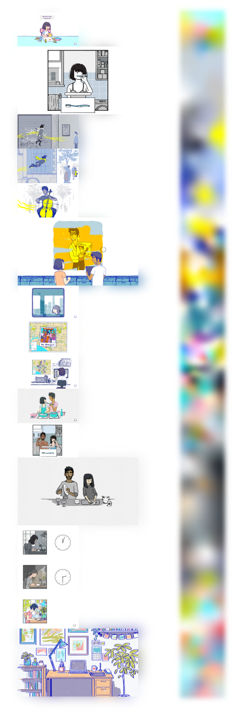

A Study of Florence by Mountains: The Impact Of Sound And Visuals In Immersive Storytelling.
I will explore the emotional themes and visual motifs of the game Florence by Mountains.

The game Florence uses many design techniques to help envelope the player into the game. Moreover, with these techniques, the game becomes an experience rather than an activity.


The second I will discuss is sound and, in this instance, music. In the game, Florence's music is a huge aspect of creating an environment and the plot. As one of the main characters is a musician, we can follow not only the protagonist but also Krish through life and through their innermost feelings that are expressed through the color palette and the music choice.